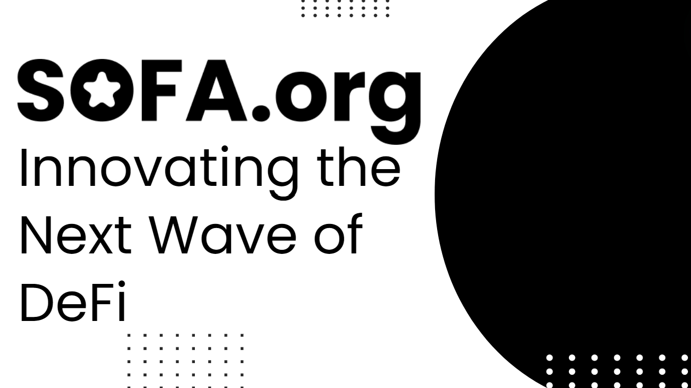

다음 DeFi 혁신의 물결
상대방의 디폴트는 분산화의 중요성을 일깨워주는 강력한 경고였다
2022년은 제네시스, 셀시우스, 3AC, FTX의 몰락으로 암호화폐에 대한 가혹한 현실을 제공했으며, 이는 우리 생태계의 핵심을 충격에 빠뜨렸고, 많은 사람들이 이익을 추구하는 과정에서 잊고 있었던 분산화의 중요성을 상기시켰습니다. 전통 금융도 레먼 브라더스의 몰락과 함께 유사한 각성을 겪었으며, 과도하게 부채를 지고 있는 상대방의 실패가 글로벌 금융 시스템을 거의 붕괴시킬 뻔했습니다.
그 결과, GFC 이후 시대에는 중앙 집중형 청산소와 삼자 청산 방식의 사용이 법제화되어 자산 보관 위험을 잘 자금 지원되고 (그리고 고도로 규제된) 제3자 기관으로 효과적으로 분리하고 집중시켰습니다. 규제 당국은 집중된 접촉 지점 내에서 담보 위험을 관리하는 것이 더 안전하고 효율적이라고 판단했으며, 나쁜 행위자 중개인이 재무 관리에서 '빠르고 느슨하게' 행동하는 것을 방지했습니다.
오늘날로 빨리 넘어가 보겠습니다. 만약 세상에 불변의 데이터 기록, 추적 가능한 거래, 정의 가능한 매개변수, 운영 투명성 및 뛰어난 네트워크 보안을 제공하는 광범위하게 사용 가능한 기술 솔루션이 있다면; 그런 기술은 글로벌 결제 예치소에 대한 이상적인 솔루션을 제공할 것 아닙니까?
블록체인의 핵심 가치로서 '신뢰 없는' 정신을 되살리기
분산화. 투명성. 불변성. 확장성. 진정성. 이들은 블록체인이 제공하는 주요 장점으로 가장 자주 언급되는 일반적인 단어들입니다. 그러나 우리는 '신뢰 없는'이 암호화폐의 핵심 가치를 가장 잘 표현한다고 느낍니다. 블록체인은 완전한 낯선 사람들이 임의의 중개인이나 특권 그룹에 의존하지 않고 유효한 거래를 수행할 수 있게 해주었습니다.
더욱이, 스마트 계약의 불변성은 상대방의 선의 대신 코드에 절대적인 신뢰를 두게 합니다. 따라서 신뢰 없는 기반은 1) 계약의 불변성과 2) 온체인 자산 정산이라는 타협할 수 없는 기둥 위에 세워집니다. 이러한 핵심 원칙은 중앙 집중화의 제약에서 진정으로 자유로운 프로토콜을 개발하는 우리의 원동력이 될 것입니다.
그러나 분산화 정신은 책임을 면제하는 극단적인 형태의 금융 무정부 상태가 아니라 사용자 접근과 참여를 촉진하는 것에 관한 것임을 분명히 해야 합니다. 블록체인 실행은 익명일 수 있지만, 거래의 다른 쪽에는 여전히 우리가 존중해야 할 사회적 인간이 존재합니다.
집단 SOFA 프로토콜의 개발은 신뢰 없는 분산화 정신을 촉진하려는 우리의 시도이며, 전문적인 책임을 유지하기 위한 '모범 사례' 가이드라인을 설정하는 것도 똑같이 중요합니다. 우리의 프로토콜 설계의 모든 부분, 계약 투명성, 금고 분류 및 공정 출시 토크노믹스는 더 책임 있는 DeFi를 구축하려는 우리의 결의와 헌신을 보여줍니다. 모범을 보임으로써, 우리는 신뢰 없는 분산화가 그 미래의 핵심 초석이 되는 더 나은 길이 있다는 것을 세상에 보여주기를 희망합니다.
리스크 토큰화
본질적으로 금융 상품은 궁극적으로 상대방에 대한 지불 및 소유권 주장에 대한 화폐 계약에 불과합니다. 이들은 다양한 인위적(& 중앙집중화된) 규제 층에 의해 지배되며, 물리적 및 전자적 서류로 법적으로 기념됩니다. 놀랍지 않게도, 우리는 앞서 언급한 많은 단어를 "디지털" 및 "블록체인 원장"으로 대체할 수 있으며, 그 의미의 본질을 잃지 않습니다.
암호화폐는 온체인 안전성, '코드는 법' 스마트 계약 프레임워크, 전송 가능한 디지털 통화 및 RWA의 토큰화 분야에서 엄청난 발전을 이루었습니다. 우리는 혁신적인 제품 금고를 통해 마지막 부분을 한 단계 더 발전시키고 있으며, 여기서 우리는 명목 금액뿐만 아니라 온체인에서 다른 중요한 금융 상품 매개변수를 기록하여, 이를 통해 '리스크 토큰화'라는 과정에서 진정으로 복제되고 참조될 수 있도록 하고 있습니다. 그 결과물은 '포지션 토큰'이라는 것으로, 이는 체인에 잠긴 자산에 대한 소유권 주장으로 생각할 수 있지만, 표준 ERC-20 토큰처럼 사용자 간에 자유롭게 전송될 수 있습니다.

사용 기반 보상을 갖춘 지속 가능한 토크노믹스 모델
보세요, 돈은 세상을 돌게 하고, 자기 이익의 극대화는 DeFi의 핵심 추진력입니다. 그러나 지난 사이클에서는 잘못 설계된 토크노믹스 때문에 한때 유망했던 프로젝트들이 (매우) 고프로필 실패를 겪는 것을 보았습니다. 내부자 및 VC에 의한 출구 유동성 덤프, 기발한 인플레이션 실험, 가격 반응 수요 모델, 단기 이익에 대한 과도한 집중 등으로 인해, 더 지속 가능한 통화 모델을 촉진하기 위해 해야 할 일이 여전히 많습니다.
이에 대한 대응으로, SOFA.org는 프로토콜 사용을 통해서만 얻을 수 있는 고정 공급의 디플레이션 유틸리티 토큰을 갖춘 100% 공정 출시 토크노믹스 모델을 배포할 것입니다. 또한, 모든 프로토콜 수익은 일일 토큰 소각 작업에 사용되어 모든 이익이 직접적으로 우리의 핵심 사용자와 홀더의 주머니로 재활용되도록 보장합니다. 장기적으로, 토큰 가격은 우리의 프로토콜이 생태계에 기여한 (정산) 가치의 근본적인 표현이 될 것입니다. '거래를 통해 얻기', 어떻습니까?
새로운 정산 기반으로서의 분산 청산
지난 사이클에서 얻은 지혜를 바탕으로, 우리는 DeFi의 구조적 단점을 직접 해결하면서 그 핵심 혁신을 반복하고 있습니다. 구체적으로, SOFA.org의 분산 청산 금고의 생성은 금융 자산이 온체인에서 원자적으로 정산될 수 있는 기준을 설정하려는 우리의 야심찬 시도이며, 동시에 전송 가능한 포지션 토큰을 통해 DeFi 자본 유동성을 촉진하는 것입니다.
관련된 기기 세부 정보를 스마트 계약에 직접 기록함으로써, 우리는 이러한 자산을 온체인에서 정산할 수 있을 뿐만 아니라, 프로토콜은 일치하는 포지션 토큰을 발행하여 확정적인 디지털 청구 증명으로 사용할 수 있습니다. 또한, 이러한 포지션 토큰은 다른 DeFi 프로토콜 및 심지어 CeFi 플랫폼에 안전한 담보로 담보할 수 있어, 전체 생태계에서 자본 유동성을 크게 향상시킵니다. 마지막으로, 우리가 철저히 설계된 DeFi 금고를 블록체인에서 안전하고 투명하며 '중립적인' 정산 옵션으로 제공함으로써, 우리는 암호화 중개인 간의 자산 보관 우려를 없애고, 사용자에게 자본의 수익률이 아닌 자본의 반환에 집중할 수 있는 완전한 마음의 평화를 제공합니다.